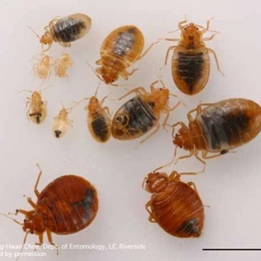
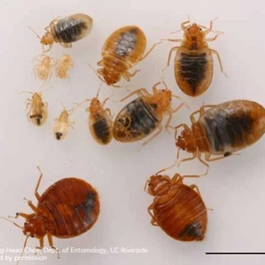

برای مشاوره ی رایگان با ما تماس بگیرید
09193613357
09194870530
026-34209019
سمپاشی عقرب تله گذاری جوندگان سمپاشی کنه سمپاشی مگس سمپاشی موریانه سمپاشی پشه سمپاشی ساس سمپاشی سوسک 

ساسها یکی از آفات خانگی قدیمی و سرسخت هستند که مقابله با آنها نیازمند دانش و اقدامات حرفهای است. این حشرات خونخوار، به دلیل توانایی بالای خود در مخفی شدن و تولیدمثل سریع، مشکلات زیادی برای افراد ایجاد میکنند. در این مقاله به بررسی ویژگیها، رفتار، خطرات و روشهای علمی و حرفهای کنترل ساسها میپردازیم.
ساسها (Bed Bugs) حشراتی کوچک و بدون بال هستند که عمدتاً از خون
انسان و حیوانات تغذیه میکنند. این حشرات اغلب در محیطهای خانگی و
تجاری یافت میشوند و به راحتی میتوانند از یک مکان به مکان دیگر
منتقل شوند. ظاهر آنها تخت و بیضیشکل بوده و اندازهای بین 4 تا 7
میلیمتر دارند. رنگ ساسها قهوهای یا قرمز مایل به قهوهای است و پس
از تغذیه، رنگ شکمشان تیرهتر و متورمتر میشود.
ساسها معمولاً
در شکافهای تختخواب، مبلمان، پریزهای برق، پشت کاغذدیواری و دیگر
مکانهای تاریک و مخفی پنهان میشوند. این توانایی برای مخفی شدن،
آنها را به یکی از مقاومترین آفات تبدیل کرده است.
ساسها موجوداتی شبزی هستند و در ساعات شب برای تغذیه از خون انسان یا
حیوانات فعال میشوند. چرخه زندگی آنها شامل سه مرحله اصلی است: تخم،
نوزاد (نیمف) و بالغ. هر ماده ساس میتواند در طول عمر خود تا 500 تخم
بگذارد که در مدت زمان کوتاهی به ساسهای بالغ تبدیل میشوند.
ساسها
به گرما و دیاکسیدکربن تولید شده توسط بدن انسان جذب میشوند. آنها
میتوانند تا ماهها بدون تغذیه زنده بمانند و این ویژگی مقاومت آنها
را در برابر شرایط سخت محیطی افزایش میدهد.
اگرچه ساسها ناقل مستقیم بیماری نیستند، اما گزش آنها میتواند
مشکلات بهداشتی و روانی جدی ایجاد کند. علائم گزش شامل خارش شدید،
قرمزی و تورم پوست است. خراشیدن محل گزش ممکن است منجر به عفونتهای
ثانویه شود. علاوه بر این، حضور ساسها در محیط زندگی میتواند باعث
اضطراب، بیخوابی و کاهش کیفیت زندگی شود.
در برخی افراد، گزش ساس ممکن است واکنشهای آلرژیک شدید ایجاد کند که
نیاز به درمان فوری دارد. همچنین، آلودگی شدید به ساسها میتواند به
کاهش بهرهوری در محیطهای کاری یا ایجاد مشکلات در صنایع گردشگری و
هتلداری منجر شود.
ساسها به دلیل توانایی بالای خود در مخفی شدن و تولیدمثل، مقابله با
آنها نیازمند روشهای دقیق و علمی است. برخی از اقدامات مؤثر عبارتند
از:
حفظ بهداشت محیط: حفظ پاکیزگی محیط یکی از مهمترین اقدامات پیشگیرانه
است. مرتباً تختخواب، مبلمان و فرشها را جاروبرقی بکشید و پارچههای
قابل شستشو را با آب گرم بشویید. استفاده از بخارشو نیز برای از بین
بردن ساسها مؤثر است.
بازرسی دقیق وسایل: در هنگام خرید وسایل دستدوم یا بازگشت از سفر،
تمامی وسایل را به دقت بررسی کنید. ساسها میتوانند از طریق چمدان،
لباس یا مبلمان وارد محیط زندگی شوند.
استفاده از کاورهای ضدساس: کاورهای مخصوص تشک و بالش میتوانند مانع از
نفوذ ساس به این وسایل شوند و آنها را در برابر آلودگی محافظت
کنند.
استفاده از سموم تخصصی: استفاده از سموم حرفهای و دارای تأییدیه برای
کنترل ساسها ضروری است. این سموم باید به طور دقیق در مکانهای تجمع
ساسها اعمال شوند تا اثرگذاری بهینه داشته باشند.
جلوگیری از بازگشت ساسها: با اجرای اقدامات پیشگیرانه و بررسی منظم
محیط، میتوانید از بازگشت مجدد ساسها جلوگیری کنید.
یکی از مؤثرترین روشها برای مقابله با آلودگی شدید ساس، استفاده از
خدمات سمپاشی تخصصی است. این خدمات شامل مراحل زیر است:
بررسی و شناسایی:
متخصصان بازرسی دقیقی از محیط انجام میدهند تا میزان آلودگی و نقاط
تجمع ساسها را شناسایی کنند.
اعمال سموم ایمن و مؤثر:
سموم استفادهشده توسط متخصصان به گونهای طراحی شدهاند که برای انسان
و حیوانات خانگی بیخطر باشند و در عین حال، ساسها را به طور کامل از
بین ببرند.
ارائه توصیههای پیشگیرانه:
متخصصان پس از اتمام عملیات سمپاشی، راهکارهایی برای جلوگیری از بازگشت
ساسها ارائه میدهند.
استفاده از خدمات حرفهای میتواند به شما کمک کند تا به طور کامل از
شر این آفات مزاحم خلاص شوید و محیطی سالم و ایمن داشته باشید.